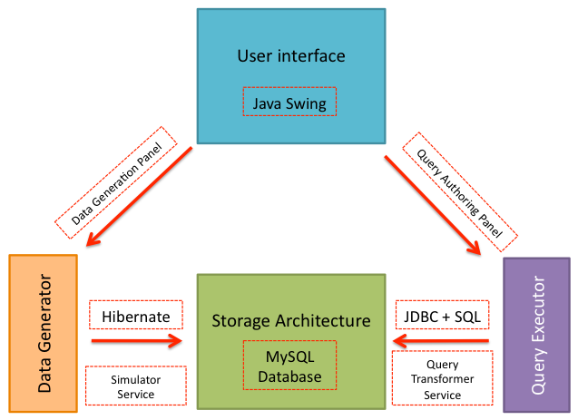

This section provides a high level view of how data is generated and manipulated
(queried) in Snofyre. We refer to this as Data Flow, even though there is no
transaction of data outside of Snofyre. However, under the hood data is being transacted
between the MySQL persistence store and Snofyre's components.
Of all the various components that comprise Snofyre, there are two important components
that deal exclusively with data transactions.
- Data Generator : This component creates new data and stores it in the MySQL
database.
- Query Executor : This component queries the data in the underlying MySQL
database and presents it to the user.
Most user actions in Snofyre's user interface deal one of these two transactional
components. Both
Data Generator and
Query Executor are infact high
level abstract notions. In reality, they are just a collection of Snofyre's services
that together carry out these high level functions.
Figure 1. Snofyre's High Level
Components

Query Executor
The Query Executor consists of the
Query Transformer Service, that transforms Query objects
into corresponding SQL statements. These SQL statements are then executed against
the MySQL database and the results returned are displayed on the screen. The details
of query execution are described in greater detail in LINK HERE..
Attention: It is important to remember that the Query Transformer Service
generates MySQL specifc native SQL and uses JDBC to execute queries against the
underlying database.
Data Generator
The Data Generator consists of the
Data Generator Service, that generates new data based on
parameters specified using a query. The Data Generator Service generates random sub
types of the criteria specified in the query and stores this random data within
patient records held in the MySQL database. The details of data generation are
described in greater detail in LINK HERE..
Attention: It is important to
remember that unlike the Query Transformer Service, the Data Generator Service
uses Hibernate as the broker to store data to the MySQL database. Since we are
less concerned with the data storage than we are with query, we can afford to
use this Hibernate as an abstraction over the persistence store.
User Interface
The User Interface concerned with data flow consists of the
Query Authoring Panel, that allows the user to
author/create new queries to execute against existing data and the
Data Generation Panel that allows the user to specify
parameters for generating new data. Since details of these user interface components
really belongs to the User Manual, we've included only relevant aspects of the
underlying service parameters in the next few chapters.
Attention: It is
important to remember that Snofyre's modular architecture means the User
Interface is essentially a thin layer that hooks into the underlying services.
This allows for the existing Java Swing user interface to be replaced with a
different user interface framework (as long as it can talk to the underlying
services).